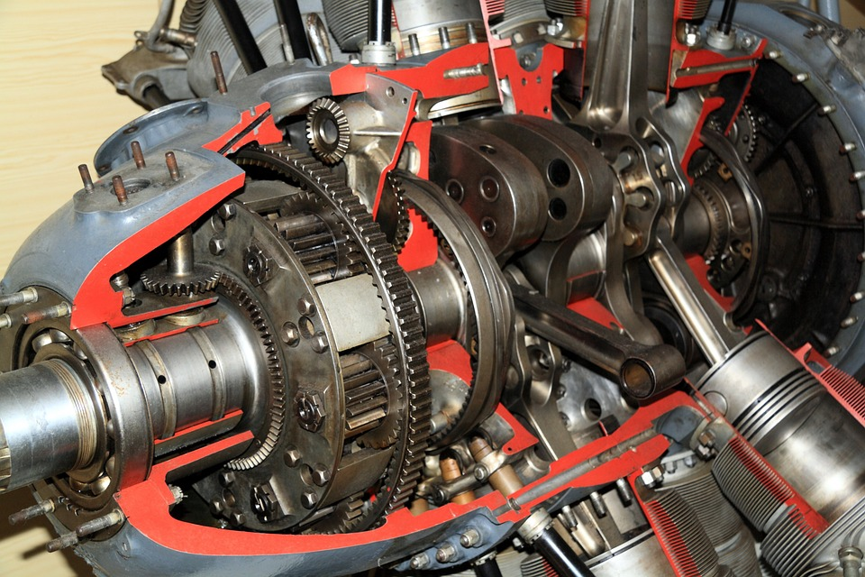

Computador vuelo
1.6.- Ejercicio 06: Método toString (estado de la aeronave)

2427999. Motor de aviación (Pixabay Lincense)
Una vez programada toda la lógica de la clase, vamos a sobrescribir el método toString() para que devuelva una cadena que represente el estado del Computador de Vuelo en un momento dado. Para facilitarte la labor del tratamiento de cadenas, y para hacerlo de una forma óptima, deberás usar el método estático format de la clase String para generar el resultado, y así evitar la concatenación repetida de objetos de tipo String. El resultado del método tendrá la siguiente estructura:
- un
inicio de bloqueo corchete de apertura (carácter[) - la
matrículade la aeronave - el
modelode la aeronave - el valor del atributo
volando(indica si está o no volando) - el nombre del
piloto - el
tipo de vueloque está realizando - el
tiempo totalde vuelo - la
velocidad - el
rumbo - la
altitud - un
fin de bloqueo corchete de cierre (carácter]).
A continuación, tienes un ejemplo de salida del método:
[Matricula=EC-FA3, Modelo=Eurostar Evektor EV-97, isVolando=false, Piloto=Rodrigo Sola, TipoVuelo=1, TiempoTotal=230, V=0 km/h, Rumbo=0º, Altitud=0 metros]Programa de pruebas
Al igual que en los ejercicios anteriores, puedes probar el ejercicio 06 con el programa TestEj06. El resultado que debería salir por pantalla al ejecutar el programa de pruebas es el siguiente